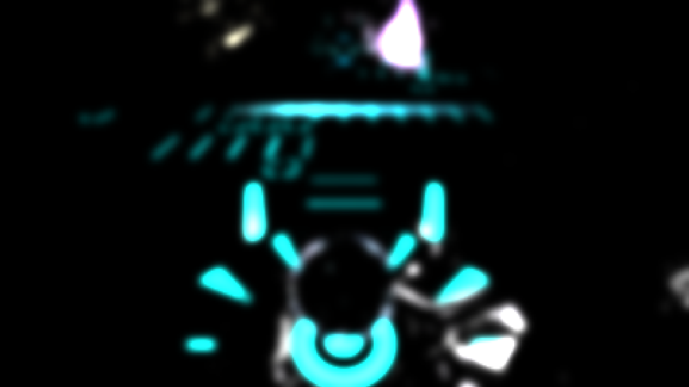
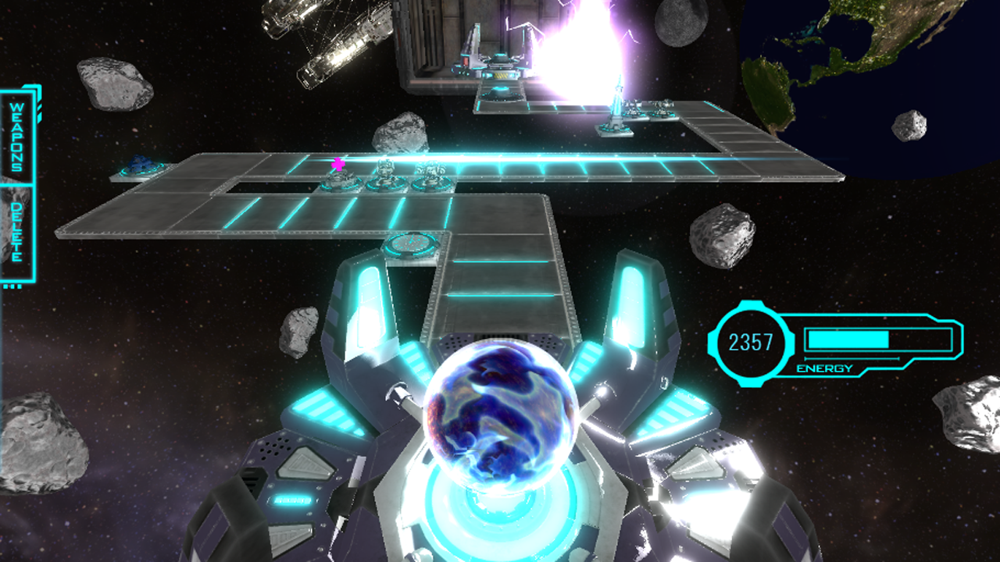
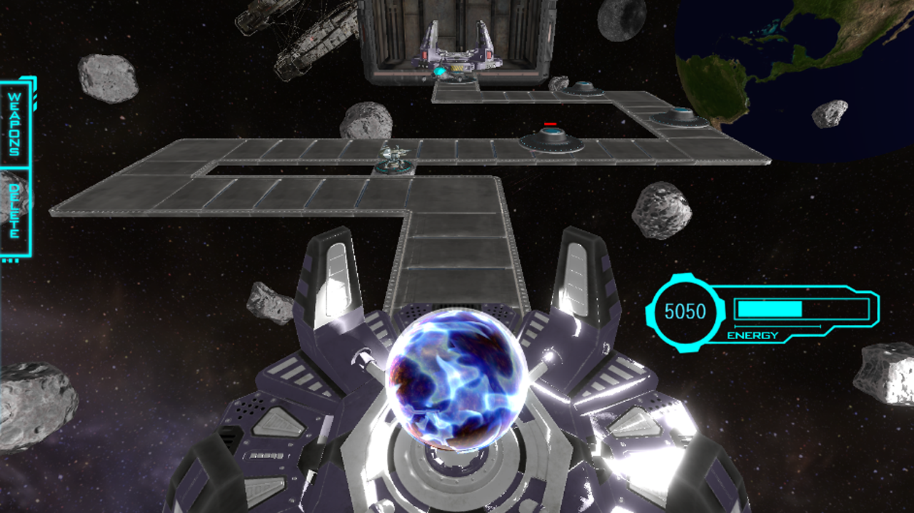
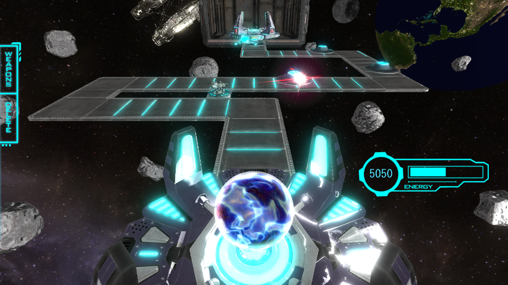
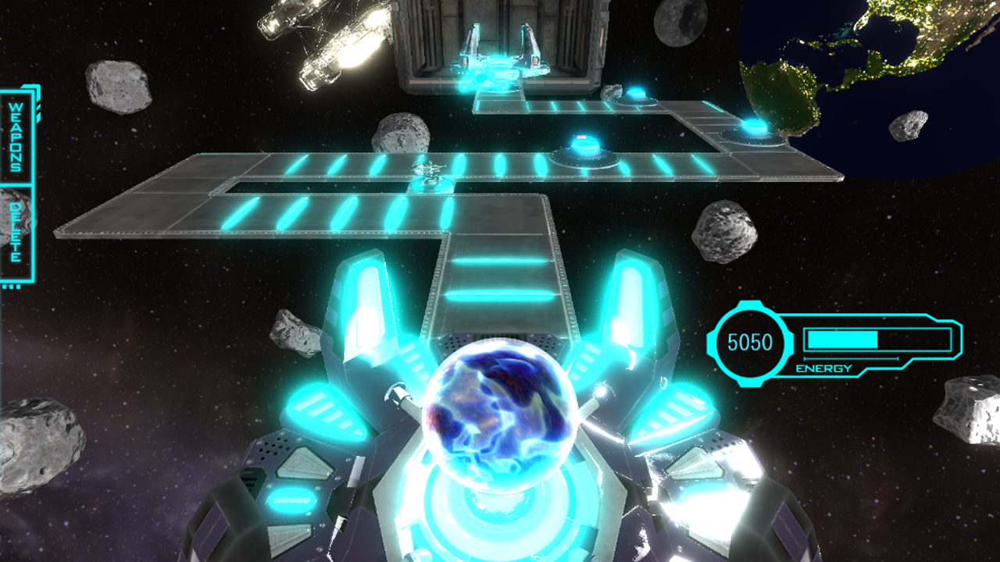
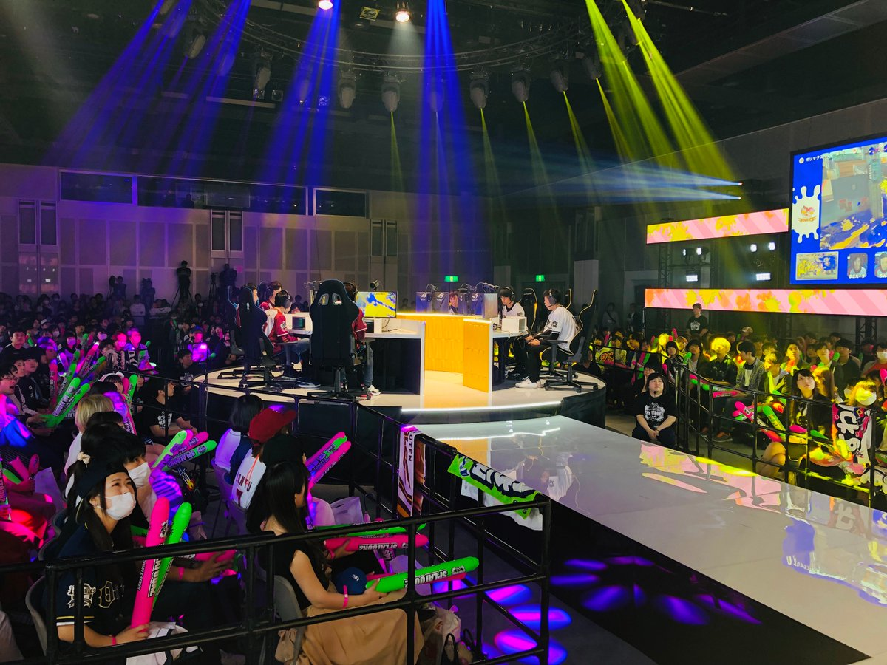
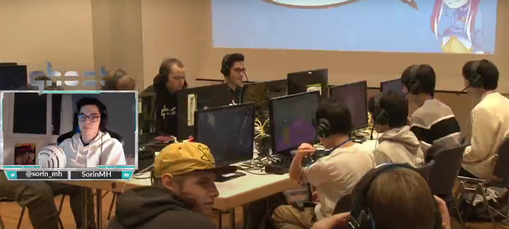
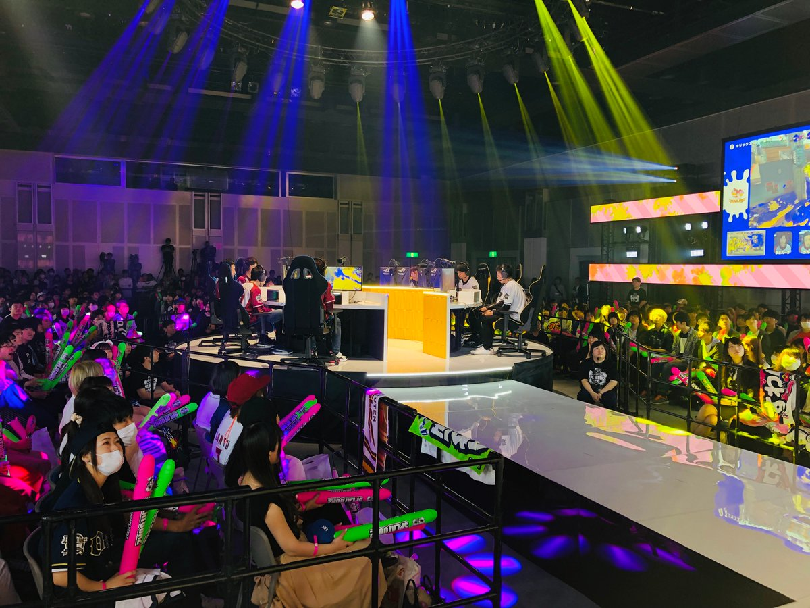
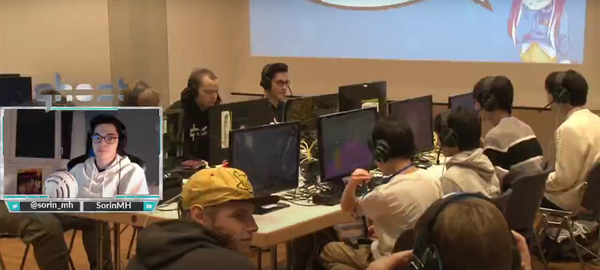

-
PBR
光の反射や屈折などの現象を、物理的な根拠に基づいて計算する手法の事です。現エンジンでは、フレネル反射を考慮し、拡散反射を求め、鏡面反射はCook-Torranceモデルで計算しています。
- 【フレネル反射】
- 法線、光源に向かうベクトル、視線に向かうベクトルから、法線と光の入射角を求め、入射角の角度に応じて拡散反射光の強さを計算しています。
- 【Cook-Trranceモデル】
- Cook-Trranceモデルに関しては著者清原隆行「HLSLシェーダーの魔導書」からコードを引用しています。
-
ブラー
基準となるテクセル＋周りの8テクセルをサンプリングしてカラーを加算し、9で除算してボカしを表現しています。
-
川瀬式ブルーム
光が溢れ出している様に見える現象です。
- シーンを一度レンダリングします

- レンダリングしたシーンの輝度をテクスチャとして抽出します

- 抽出した輝度テクスチャにブラーを掛けてぼかします

- ブラーを掛けてぼかした輝度テクスチャをメインレンダリングターゲットに加算合成して完成です

-
エミッションマップ
自己発光させたい場所に色を塗ったテクスチャで自己発光を表現します。
UFOの上部、宇宙船の青い箇所、画面上部の宇宙ステーション、地球の都市部分にエミッションマップを使用しています。
- 0.0（エミッション無し）

- 5.0（実際にゲームで使用している強度）

- 20.0（過度に強くした強度）

 


